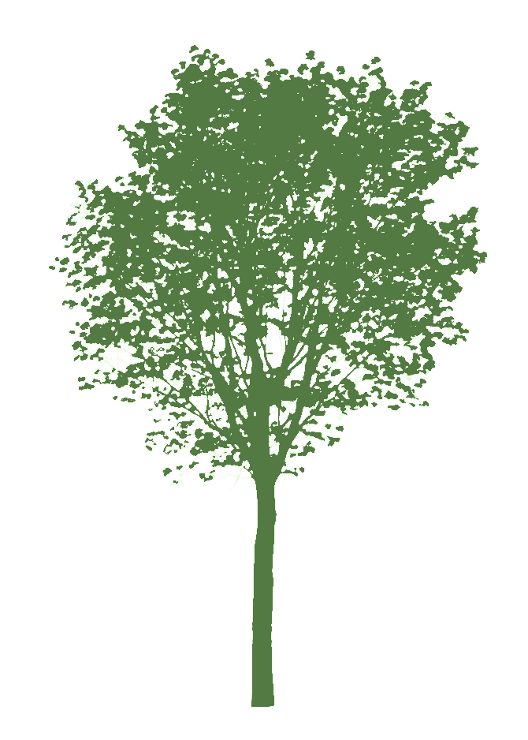

Friends Of The Forest is an initiative for promoting Agroforestry as an alternative to conventional agricultural practices in order to help in the fight against climate change.
We believe nature should be treated with respect and that bringing sustainability and economic growth together is not only possible but essential for guaranteeing the welfare of the next generations.
In Brazil, over 70% of the land used for agriculture is devoted for monocultures, specially soy and maize. This practice has been proved to deplete the soil from minerals resulting in desertification. Harsh chemicals are used to control diseases which are easily spread in monocultures. It also causes a loss of the biodiversity of the region due to the removal of native vegetation in order to optimize the production of grains.
Despite Brazil being one of the biggest food producing countries, over 60 million Brazilians face food insecurity. Most of the grains produced in monocultures is destined to exportation. Also, around 70% of what Brazilians eat every day is produced by small family run farms.
Agroforestry can help us solve these issues. By interacting nature and agriculture, we can produce high quality food without destabilizing native systems. By copying natural process, the need for pesticides and other harsh chemicals is drastically reduced. In addition, the variety of plants and animals created in this type of agriculture can help meet most needs of the local population.
Learn by getting your hands dirty. See how we are implementing agroforestry in our farm. Enjoy delicious meals made with fresh local sourced products. Relax in a lovely cottage
We are in the process of creating masterclasses in 4 topics. Register your interest to learn about soil management, to understand farm woodland, to study the economics of agroforestry and to plan the transition of your farm.
Receive periodic news about how people around the world are practicing agroforestry and stay up to date with the latest research in the area.